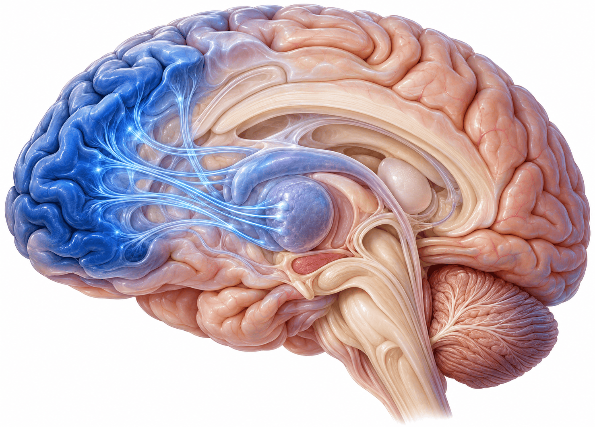
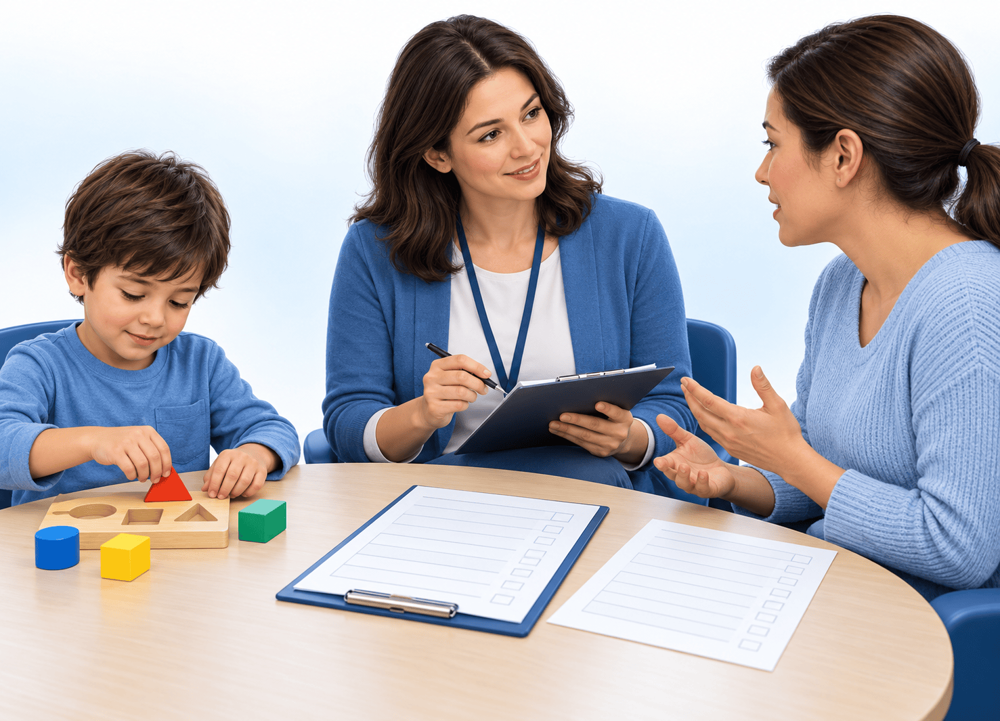

소아 ADHD 강의의 근거 점검:
발달·성인기 경과·
약물 안전성
발달의 이해에서 약물 효과·안전성과 성인기 기능까지

발달과 임상 표현
ADHD는 증상과 기능 손상을 함께 보는 발달질환
주의력결핍 과잉행동장애(ADHD): 성격이나 노력 부족으로 설명하지 않는다
주의력 결핍
부주의·산만함·과제 지속 곤란이 핵심이다. 주의력이 떨어져도 학업과 생활에 실제 문제가 없다면 ADHD로 진단하지 않는다.
 과잉행동·충동성
과잉행동·충동성안절부절, 가만히 앉아 있기 어려움, 불쑥 행동하기가 다른 증상 축을 이룬다.
 발달 과정에서 시작
발달 과정에서 시작증상은 만 12세 이전에 시작하며, 연자는 대부분의 아이에서 6세 이전부터 관찰된다고 설명했다.
 여러 환경의 실제 어려움
여러 환경의 실제 어려움가정·학교·또래 관계 등 여러 환경에서 분명한 문제가 있어야 한다. 증상의 존재와 기능 손상을 함께 평가한다.
핵심 관점: 신경발달질환(neurodevelopmental disorder)이며, 발달 수준과 생활 맥락을 함께 평가한다.
진단 · 부주의
부주의: 과제의 시작·유지·완수 전반에 나타난다
DSM-5의 부주의(Inattention) 증상군
주의의 정확성과 지속
부주의한 실수가 잦고, 과제나 놀이에 주의를 유지하기 어렵다.
듣기와 지시 수행 경청하지 않는 듯 보이거나 지시를 끝까지 따르지 못한다.
 조직화와 지속 노력
조직화와 지속 노력과제·활동 조직화가 어렵고, 지속적 집중을 요하는 일을 피한다.
물건과 외부 자극 물건을 자주 잃어버리고 외부 자극에 쉽게 산만해진다.
일상과 기억 일상적인 일을 자주 잊는다. 해야 할 일을 알고도 끝내지 못하는 양상을 확인한다.
진단기준의 변화 부주의는 9개 항목이며, 17세 이상은 각 증상군 5개 이상으로 기준이 조정되었다.
DSM-5에서는 발병 연령 기준을 7세에서 12세로 바꾸고 자폐스펙트럼과의 동반 진단을 허용했다.
진단 · 과잉행동과 충동성
과잉행동은 줄어도 조절의 어려움은 남을 수 있다
과잉행동·충동성(Hyperactivity–Impulsivity) 증상군
가만히 앉기 손발을 만지작거리며 안절부절하거나, 자리에 앉아 있기 어렵다.
활동 수준
부적절하게 뛰거나 기어오르고, 조용히 활동하기 어렵다.
움직임과 말 끊임없이 움직이며 말을 지나치게 많이 한다.
반응 억제
질문이 끝나기 전에 불쑥 대답한다. 행동 전에 잠깐 멈추기가 어렵다.
순서와 관계
순서를 기다리기 어렵고, 다른 사람에게 자주 끼어들거나 방해한다.
연령에 따른 표현 9개 증상 항목으로 구성된다. 취학 전후에 두드러지고, 나이가 들며 줄어드는 경향이 있다.
외현적 과잉행동이 줄었다는 사실만으로 부주의와 실행기능 문제가 모두 호전되었다고 보지 않는다.
발달 · 실행기능
핵심은 실행기능의 발달 지연이다
실행기능(executive function): 행동을 조절하고 계획을 실제로 수행하는 관리 기능
반응 억제
말이나 행동 전에 멈추고 결과를 생각한다. 충동을 조절하는 토대이다.
시간 관리 마감까지 남은 시간을 가늠하고 해야 할 일에 배분한다.
계획·우선순위 순서를 정해 실행하고, 계획대로 되지 않으면 수정한다.
작업 기억 규칙·지시·해야 할 일을 머릿속에 유지하고 활용한다.
감정 조절
생각과 행동뿐 아니라 분노·좌절·감정 기복도 조절한다.
정리·조직화
책가방·책상·자료·일정을 체계적으로 정리한다.
연자는 실행기능을 뇌 전체의 기능을 지휘하는 ‘지휘자’에 비유했다.
임상 표현 · 보상과 자기조절
좋아하는 일에 몰두해도 ADHD를 배제하지 않는다
집중의 양뿐 아니라 집중과 행동을 조절하는 능력이 문제이다
계획 없이 시작
해야 할 일의 순서를 잡기 어렵고, 그때그때 하고 싶은 일에 반응한다.
즉각적 보상에 몰두 좋아하는 게임이나 활동에는 과몰입할 수 있다. 지연된 보상을 향한 노력은 지속하기 어렵다.
실수와 관계 충돌
답하거나 행동하기 전 멈추지 못해 실수·분노·또래 갈등이 반복될 수 있다.
조용한 부주의형에서는 느림·멍함·과제 미완수·위축이 두드러질 수 있다.
놓치기 쉬운 대상
문제 행동이 적은 ADHD도 주의 깊게 관찰한다
부주의 우세형, 여아, 지능이 좋은 아이에서 진단이 늦어질 수 있다
지능이 좋은 아이
초기 보완 이후 드러남
높은 지능으로 증상을 보완하다 과제량이 늘면 어려움이 표면화될 수 있다.
여아
부주의·내재화 양상
과잉행동보다 조용한 모습이 두드러져 진단과 치료가 지연되기 쉽다.
부주의 우세형
겉으로 얌전한 아이
문제 행동이 적어 보여도 집중 유지와 과제 완수의 어려움은 지속될 수 있다.
관찰의 초점을 ‘시끄러운가’에서 ‘발달 수준에 맞게 일상을 해내는가’로 넓힌다.
유병률과 경과
흔한 질환이며 일부에서는 성인기까지 이어진다
교재에 제시된 소아·성인 유병률과 성인기 경과
5–8%
학령기 소아
연자는 세계적으로 유병률이 대체로 일관된다고 설명했다. 소아의 남:여 비는 3–4:1이다.
약 2.5%
성인
나이가 들면서 과잉행동·충동성은 줄지만 부주의는 오래 남을 수 있다.
15–20%
성인기의 뚜렷한 증상
교재의 경과 설명이다. 본강의에서 연자는 미치료 시 지속 경과와 조기 치료의 중요성을 함께 강조했다.
성인기 경과를 볼 때에는 핵심 증상과 학습·직업·대인관계의 기능을 함께 본다.
원인 · 유전과 환경
다유전자와 신경회로의 발달이 연결된다
전전두엽–선조체 회로와 도파민(DA)·노르에피네프린(NE)
작은 유전 효과의 조합 단일 유전자 하나의 큰 영향보다 여러 유전자의 작은 효과가 조합되어 전전두엽 발달에 영향을 준다는 설명이다.
뇌 회로와 신경전달 전전두엽은 선조체·소뇌·시상하부 등과 회로를 이루며, 회로의 발달 지연 및 DA·NE 신경전달 불균형과 연관된다고 설명했다.
기질·환경의 영향 임신 중 음주, 저체중·미숙아, 주산기 손상 등이 위험을 높인다. 환경은 발현·악화·기능에 영향을 준다.
약 75%
교재의 유전율
친형제 25–30%, 입양 형제 5–7%로 제시된다. 양육 방식 자체를 일차 원인으로 돌리지 않는다.
원인과 치료 환경은 구분한다. 부모교육과 일관된 양육 환경의 조정은 치료 과정에서 중요하다.
발달 · 강의가 인용한 연구
전전두엽 성숙의 지연을 설명한 강의 근거
Shaw et al., 2007: 교재에 제시된 대뇌피질 성숙 시점
성숙 정점의 차이 교재는 ADHD 아동에서 대뇌피질 성숙 정점 도달이 약 2–3년 늦다고 제시했다.
발달이 계속되는 시기
연자는 전두엽 발달이 20대 초반까지 계속된다고 설명했다. 발달 지연은 부주의·학업·실행기능 문제의 경과와 연결된다.
회로의 역할 하전두피질(inferior frontal cortex)은 충동·감정 조절, 바깥쪽은 집중 유지, 안쪽은 타인의 마음 이해를 담당한다고 설명했다.

연자는 이를 결함이나 성격 문제가 아닌 발달 속도의 차이로 설명했다.
진단 · 통합 평가
단일 검사보다 여러 정보원을 통합한다
면담·행동 관찰·척도·심리 및 신경인지 검사를 보조적으로 활용한다
 서로 다른 환경의 정보
서로 다른 환경의 정보아이를 직접 관찰하고 부모·담임교사의 설명, 학교생활과 또래 관계의 정보를 함께 모은다.
검사의 역할 평가 척도·설문지, 지능검사·주의력검사는 종합 판단을 돕는다. 지능과 발달 수준을 고려해 주의력 문제를 해석한다.
충분한 관찰과 의뢰 한 번의 진료나 단일 검사로 진단하지 않는다. MRI·뇌파만으로 진단할 수 없으며 의심 시 소아청소년정신과로 의뢰한다.

진단은 충분한 관찰 기간과 여러 상황의 정보를 바탕으로 하는 임상적 종합 판단이다.
동반질환과 이차적 문제
ADHD와 함께 오는 문제도 치료의 대상이다
교재는 주요 동반질환의 비율을 ‘개념적 비율’로 제시한다
주요 동반질환
품행장애14%
기분장애18%
학습장애25%
불안장애34%
적대적 반항장애40%
교재의 개념적 비율(MTA 연구)이며 막대는 최대값 40%를 기준으로 한다. 동반질환은 경과와 치료 반응에 큰 영향을 주므로 핵심 증상만으로 치료 전체를 판단하지 않는다.
행동과 정서 공격성·반항·자신감 저하·우울 등 정서 및 행동 문제를 함께 평가한다.
관계와 학업
또래 관계의 어려움, 학습 부진·미루기·과제 미제출이 동반될 수 있다. 아이의 일상 기능을 돕는 접근이 필요하다.
동반질환의 수치는 단일 환자의 예측치로 사용하지 않고 강의의 동반질환 설명으로 읽는다.
자연경과와 조기 개입
증상의 형태와 기능 손상은 연령에 따라 바뀐다
학령전기에서 성인기까지: 교재의 경과 도식
학령전기 과잉행동이 두드러진다. 이른 증상 인식과 도움의 시작이 중요하다.
학령기
부주의·충동성이 뚜렷해진다. 부정적 피드백은 학업·관계·자존감의 악순환으로 이어질 수 있다.
청소년기 과잉행동이 감소해도 부주의가 남는다. 미치료 시 학습 부진·정서 불안정·품행 문제를 동반할 수 있다.
성인기 교재는 15–20%의 뚜렷한 증상 지속을 설명한다. 치료 시 과잉행동부터 호전되고 여러 기능 영역이 좋아진다.
교재는 품행장애 소아의 약 50%가 성인기 반사회적 인격장애로 이어진다고 설명한다. ADHD 전체의 비율과 구분한다.
치료 · 다면적 접근
약물치료와 부모·학교·정신사회적 지원을 병행한다
연자는 약물치료를 일차치료로 설명하면서 병합 접근을 강조했다

약물치료핵심 증상과 실행기능의 호전을 목표로 한다. 반응과 이상반응을 함께 조정한다.
부모교육약물교육과 양육훈련을 함께 시행한다. 훈육·사회성·학습을 돕는 방법을 교육한다.
정신사회적 치료동반 문제에 따라 인지행동치료, 사회기술훈련, 가족치료를 병합한다.
학습·교육적 지원학업의 어려움이나 난독증이 동반되면 학교 환경과 학습 전략을 조정한다.
약물만으로 모든 생활 문제를 해결하려 하지 않고 아이가 생활하는 환경까지 함께 돕는다.
약물 · 자극제와 비자극제
효과·시간·동반질환을 고려해 약물을 선택한다
교재의 두 약물군: 중추신경자극제(Stimulants)와 비중추신경자극제(Non-stimulants)
 중추신경자극제
중추신경자극제메틸페니데이트(methylphenidate): 콘서타·메디키넷·페니드. 효과가 빠르고 강하며, 교재는 70–85% 반응을 제시했다.
작용과 이상반응 복용 당일부터 작용하고 제형에 따라 작용시간을 조절한다. 식욕저하·불면·두통·복통이 주요 이상반응이다.
비중추신경자극제 아토목세틴(atomoxetine, 스트라테라), 클로니딘(clonidine, 켑베이)이 제시된다. 틱·불안 동반이나 자극제 이상반응 시 고려한다.
효과의 시작과 지속 교재는 최소 2주 이상 후 효과, 작용 후 24시간 지속, 낮은 남용 위험을 설명했다.
강의의 선택 원칙: 자극제의 빠른 효과와 이상반응, 비자극제의 동반질환 적합성을 함께 본다.
약물 · 제형
메틸페니데이트는 제형의 차이가 처방에 반영된다
작용시간과 복용 방법에 대한 연자의 설명
| 제형 | 강의에서 설명한 작용시간 | 복용 형태 |
|---|
| 페니드(Penid) | 4시간 | 가루약으로 만들 수 있다. |
|---|
| 메디키넷(Medikinet) | 6시간 | 캡슐을 열어서 먹을 수 있다. 오전 복용 뒤 빠른 효과를 선호하는 보호자도 있다고 설명했다. |
|---|
| 콘서타(Concerta) | 12시간 | 열어서 먹을 수 없는 제형이다. 작용시간이 긴 약은 혈중농도가 천천히 오르내린다는 설명이다. |
|---|
연자는 긴 작용시간의 제형은 혈중농도가 서서히 변하고, 빠른 효과를 선호하는 보호자도 있다고 설명했다.
약물 · 초기 조정과 보호자 설명
초기 이상반응을 관찰하며 맞는 약을 찾는다
연자의 임상 설명과 경험을 구분해 읽는다
자주 보이는 이상반응 식욕저하·불면·두통·복통을 관찰하며, 초기부터 아이에게 맞는 약을 찾는 조정 과정을 강조했다.
보호자에게 한 설명 연자는 이상반응이 눈에 보이고 중단하면 다음 날 바로 없어지며, 장기 복용 도중 새로 생기는 이상반응은 없다는 방식으로 보호자에게 설명한다고 말했다.
연자의 시작시점 견해 취학 전에 약을 조정하고 문제 행동으로 낙인찍히기 전에 도움을 받도록, 취학 전 2학기의 10월 무렵을 적절한 시작시점으로 설명했다.
조기 개입의 목적
충분한 관찰 속에서 약을 조정하고 학업·또래 관계·자존감의 부정적 경험이 쌓이기 전에 돕는다는 취지이다.
이 슬라이드의 보호자 설명과 시작시점은 본강의에서 연자가 제시한 임상 경험이다.
약물 · 비자극제
아토목세틴의 효과와 내약성을 함께 살핀다
틱·불안 동반 및 자극제 이상반응에 대한 강의 설명
선택 맥락 자극제보다 효과가 덜하지만 이상반응도 덜하다는 설명이다. 틱·불안이 있거나 예상될 때 고려한다.
아토목세틴 연자가 가장 많이 사용한다고 설명한 비자극제이다. NE 재흡수 억제제로 제시된다.
오심과 복용 시각 오심(nausea)이 있을 수 있다. 연자는 저녁에 처방하지만 아침·저녁 모두 가능하다고 설명했다.
대사와 구토 CYP2D6로 대사된다. 연자는 poor metabolizer에서 구토 가능성을 미리 설명한다고 말했다. 아시아인에는 드문 것 같다는 견해도 덧붙였다.
클로니딘(켑베이)도 비자극제로 소개되었다. 약물 선택은 효과와 동반 문제, 이상반응을 함께 반영한다.
약물 안전성 · 내과 관점
심혈관 병력·틱·경련을 함께 점검한다
메틸페니데이트의 이상반응: 소아와 성인의 기저질환을 모두 고려한다
 혈압·맥박
혈압·맥박혈압과 맥박이 다소 상승할 수 있다고 설명했다. 정상 발달 아동에서는 대체로 큰 문제가 없다는 취지였다.
 심질환 병력
심질환 병력부정맥, 구조적 심기형, 심질환 및 돌연사 가족력을 확인한다. 기왕력이 있으면 신중하게 평가한다.
성인 ADHD 기존 고혈압이나 성인병이 있는 성인에서는 더 주의하여 사용해야 한다고 설명했다.
틱·경련 기존 틱이나 경련이 악화될 수 있어 주의한다. 교재는 경련 역치 저하와 비자극제 고려를 설명했다.
효과가 좋다는 설명과 별개로, 병력 확인·이상반응 관찰·필요 시 용량 조절 또는 약물 변경을 시행한다.
약물 안전성 · 성장과 지속
성장을 기록하고 치료의 필요성을 재평가한다
교재의 성장 경과와 재평가 내용, 연자의 병원 데이터 설명
초기 성장과 장기 경과 식욕저하로 일시적·용량의존적 성장 지연이 가능하다. 교재는 개인차가 크고 약 3년 후 회복세, 최종 성인 신장은 대체로 정상 범위라고 설명했다.
모니터링과 조정 키·체중을 정기적으로 기록한다. 연자는 초기 식욕저하가 두드러지면 다른 약으로 바꾸도록 설명한다고 말했다.
치료 지속의 판단 교재는 보통 1년마다 효과·필요성을 종합 재평가한다고 제시했다(NICE, 2008). 효과가 뚜렷하면 지속하고 호전·안정 시 감량·중단을 시도한다.
발달에 관한 연자의 해석 추적관찰 연구와 병원 데이터를 언급하며 또래와 비슷한 전두엽 발달, 원래 성장 percentile로 따라잡는 양상을 설명했다.
연자는 개인 경험상 일찍 시작하고 IQ가 좋을수록 빨리 중단할 수 있다고 설명했다. 치료기간은 정기적으로 평가한다.
비약물 치료
약물 효과를 생활의 변화로 이어가는 지원
동반 문제와 학업·또래·가족의 기능에 맞춘 정신사회적 치료
부모교육 ADHD 이해, 긍정적 관심과 강화, 일관된 지침 및 양육 기술을 교육한다.
인지행동치료 행동 전에 멈추고 생각하기, 자기감시 훈련, 토큰 강화 등을 활용한다.
사회기술훈련
또래와 어울리기, 감정 인식·조절, 갈등 다루기를 집단으로 연습한다.
가족치료
가족 갈등과 문제해결 기술, 의사소통과 가족 기능의 변화를 함께 다룬다.
연자는 우울·사회성·충동성·난독증 등 동반 문제에 따라 필요한 지원을 함께 시행한다고 설명했다.
연자 Q&A · 식욕부진
식욕이 너무 떨어질 때의 조정 경험
연수강좌 질의응답에서 김효원 연자가 답한 내용
연자 Q&A식욕부진에 대한 답변 효과는 있으나 식욕부진이 있는 경우 트레스탄을 함께 처방해 식욕이 호전되는 아이들이 있다고 답했다.
추가 조정 경험 호전되지 않으면 약물 휴일을 갖거나, 주말에 지속시간이 짧은 약물을 처방하기도 한다고 답했다.
연자 Q&A질문의 배경 용량이나 작용시간을 줄이면 과잉행동이 늘고, 늘리면 먹지 않아 조절하기 어려운 상황에 대한 답변이다.
치료의 양면을 관찰 이 답변은 증상 조절과 식사·성장 문제를 함께 보며 약물의 형태와 사용 방식을 조정하는 연자의 경험을 보여 준다.
연자 Q&A · 식욕부진 대응에 관한 처방 경험이며 본강의의 일반 설명과 구분한다.
연자 Q&A · 성인기 경과
성인기의 부분적 증상과 기능 어려움도 포함해 본다
MTA 연구를 언급한 연자의 Q&A 답변
연자 Q&AMTA의 장기 경과에 대한 답변 연자는 아동기 ADHD 환자의 약 90%가 성인기에도 부분적이거나 완전한 증상 및 기능적 어려움을 겪었다고 답했다.
약물과 발달에 대한 견해 투약 시 전두엽 발달이 또래와 비슷해지는 시기가 빠르고, 주의집중·과잉행동·충동성·감정조절 및 관계·학습에도 도움이 된다고 답했다.
연자 Q&A어떤 경과를 말하는가 본강의의 15–20%는 성인기까지 남는 뚜렷한 증상에 관한 설명이다. Q&A의 약 90%는 부분적 증상과 기능적 어려움까지 포함한 답변이다.
연자의 전망 전두엽 발달 연구를 근거로, 투약군에서 성인 ADHD로 남는 비율이 낮을 것으로 생각한다고 답했다.
연자 Q&A · 서로 다른 결과 지표를 구분하고, 약물의 장기 효과에 대한 연자의 해석으로 읽는다.
연자 Q&A · 병용약물
내과약 병용: 교감신경 항진과 상호작용을 본다
소아 ADHD 치료 중 내과약 및 항우울제 사용에 대한 연자 답변
연자 Q&A교감신경을 항진시키는 약 소아에서는 교감신경을 항진시키는 약을 주의하면 된다고 답했다.
SSRI 계열 에나폰은 상호작용과 이상반응이 많아 요즘은 SSRI 계열로 대체하며, ADHD 약물과 함께 써도 대부분 안전하다고 답했다.
연자 Q&AWellbutrin·TCA Wellbutrin이나 에나폰 같은 TCA는 교감신경계에 작용하므로 ADHD 약물과 잘 병용하지 않는다고 답했다.
답변의 적용 맥락 우울증 또는 내장과민성·만성기침·목이물감으로 내원했을 때 다른 약을 함께 사용할 수 있는지에 대한 문답이다.
연자 Q&A · 병용에 관한 연자의 답변을 요약한 학습 내용이다.
연자 Q&A · 발달과 치료 반응
발달의 종점과 치료 반응에는 개인차가 있다
지능·학습 경과 및 치료 반응이 적은 경우에 대한 연자 답변
연자 Q&A발달과 지능검사
발달의 종점은 개인차, 기저 증상, 약물·학습 지원의 시작 시기에 따라 다르다고 답했다. 치료 전에는 능력을 충분히 발휘하지 못해 저평가되기도 한다.
투약 후 인지기능 투약 후 인지기능이 개선되면서 지능검사 결과가 오르는 경우를 자주 본다고 답했다.
연자 Q&A충분히 좋아지지 않을 때 ADHD에 다른 문제가 동반되었을 수 있으므로 다시 평가하고, 부모교육·사회성치료·놀이치료의 필요성을 상의하도록 답했다.
함께 보는 기능
약물 반응뿐 아니라 학습 속도, 또래 관계와 적응의 변화를 함께 보는 질문에 대한 답변이다.
연자 Q&A · 치료 반응이 적으면 동반 문제를 재평가하고 부모·사회성·학습 지원을 함께 조정한다.
연자 Q&A · 성인 치료
성인기에는 환경의 요구와 보상 전략까지 본다
성인 ADHD의 치료 지속·중단에 대한 연자의 답변
약물 선택 성인은 작용시간이 긴 콘서타를 가장 많이 사용한다고 답했다.
지속의 배경 실행기능 저하가 만성화되고 직업·시간관리·관계의 요구가 복잡해, 자연스러운 발달만으로 중단할 시기를 기대하기 어렵다고 설명했다.
중단이 가능한 상황 인지치료, 달력·알람·업무 분할로 일상을 관리하거나 주의집중 요구가 적은 환경으로 바뀌면 중단할 수도 있다고 답했다.
연자 Q&A · 성인의 치료 필요성은 현재 기능과 생활 환경, 비약물적 조절 능력을 함께 반영한다.
내과 진료 · 정리
발달·기능·안전성을 한 흐름으로 연결한다
강의 학습을 내과 진료의 관찰과 협진으로 정리한다
발달과 기능조용한 부주의형·여아·지능이 좋은 아이에서도 기능 손상을 놓치지 않는다.
종합 평가와 의뢰다양한 정보원을 통합하고 소아청소년정신과 전문의의 평가로 연결한다.
효과와 안전성심혈관 병력·가족력, 틱·경련, 식욕·성장을 점검하며 초기 약물을 조정한다.
생활의 회복약물과 부모교육·정신사회적 치료·학습 지원을 병행하고 성인기 기능도 본다.
본강의의 연구·경과 설명과 연자 Q&A의 임상 경험을 함께 학습하되 각각의 맥락을 유지한다.
마무리
조기 개입과 정기 평가로 발달과 기능을 돕는다
소아 ADHD 강의의 발달·성인기 경과·약물 안전성 학습
진단은 종합 판단 증상뿐 아니라 발달 수준과 여러 환경에서의 기능 손상을 평가한다.
치료는 다면적 접근 약물의 효과와 이상반응을 조정하면서 부모·학교·정신사회적 지원을 병행한다.
성인기까지 이어지는 관찰 증상의 표현이 달라질 수 있으므로 성장·생활 기능·치료 필요성을 정기적으로 재평가한다.
의료진 학습용 · 김효원 연자의 본강의·교재·질의응답에 기초한 강의 리뷰